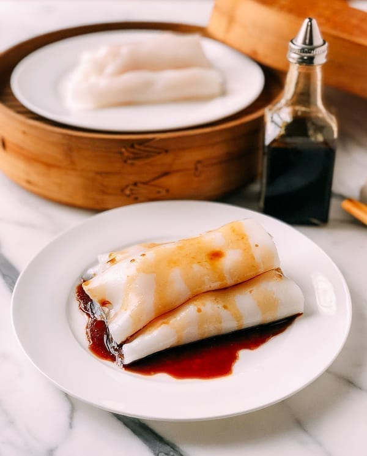

Rice Noodle Roll

Description:
Rice Noodle Rolls are mainly a Cantonese cuisine. There are many versions of it containing meat or vegetables.
Ingredients:
- Lean Pork
- Egg
- Glutinous Rice Flour
- Wheat Flour
- Chinese Rice Flour
Steps:
- Stir the lean pork into mince, adding marinade to marinate for 10 minutes.
- Cut the scallions into slices and crack several eggs, prepared as ingredients for use.
- Mix glutinous rice flour, Wheat flour, Chinese rice flour and water to form a paste.
- Brush the dish with a layer of vegetable oil, add minced meat, add a tablespoon of paste, and then add the scallion slices and the evenly beaten eggs.
- Boil the pot with water and put the dish on the steamer.
- Cover the lid and steam the dish of paste for about 3 minutes (open the lid, if you see the paste bubbling, it means the steaming is done).
- Fold the thin pancake into rice noodle rolls with a shovel.
Reference:
References taken from Chinese Food Wiki